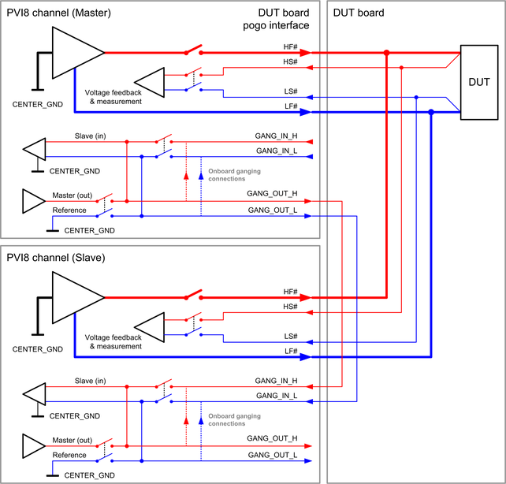

PVI8 ganged wiring and ganging control pogo pins
In order to achieve a higher output current, parallel connection of multiple PVI8 channels is supported. This is called "ganging". Some electrical design rules must be considered for ganging PVI8 channels.
Several pogo pins of the ganged channels must be connected together on the DUT board: A parallel connection is required for the output pins of the channels (HF#, LF#, HS# and LS#). Four pogo pins are available to feed the master's signal to the slaves in case the ganged channels are located on different cards.
HF# and LF#
The HF (High force) pogo pins and the LF (Low force) pogo pins of the ganged channels must be connected together on the DUT board as shown in the diagram below. The DUT board layout must consider the maximum combined current of the ganged channels.
The force lines from the pogo pins of the individual channels to the point where the force lines are connected together should have the same path resistance. This should harmonize the dynamic behavior of the ganged channels.
HS# and LS#
The HS (High sense) pogo pins and the LS (Low sense) pogo pins of the ganged channels must be connected together on the DUT board as shown in the diagram below. The connection from sense lines to the force lines should be made directly at the DUT to ensure a sufficient voltage regulation and measurement.
Common design rules for GANG... pogo pins
These pins are used to feed the ganging control signal from the master channel to the slave channels in case a group of ganged channels is located on two cards. No connections are required if the channels of ganged groups are located on one card. It is recommended to use the trace between the GANG_OUT_L pogo pin of the 1st card and the GANG_IN_L pogo pin of the 2nd card as shield for the corresponding trace between the GANG_OUT_H pogo pin and the GANG_IN_H pogo pin.
GANG_OUT_H
The GANG_OUT_H pogo pin carries an analog signal which is proportional to the master's current. The pin is connected to channel 8 of the card and must be connected to the GANG_IN_H pin of the next card in case the ganged channels are located on two cards. The ground reference of this pin is the GANG_OUT_L pin of the same card.
GANG_OUT_L
This pogo pin is the ground reference of the master channel and all slave channels. The pin is connected to channel 8 of the card and must be connected to the GANG_IN_H pogo pin of the next card in case ganged channels are located on two cards. The pin is internally connected to the center ground of the master channel and therefore may carry high voltages.
GANG_IN_H
The GANG_IN_H pin is used to feed the ganging control signal of the master channel to slave channels on another card. The pin is connected to channel 1 of the card and must be connected to the GANG_OUT_H pin of the masters' card in case the ganged channels are located on two cards. The ground reference of this pin is the GANG_IN_L pin of the same card.
GANG_IN_L
This is the ground reference of the GANG_IN_H pogo pin. The pin must be connected to the GANG_OUT_L pin of the masters' card in case the ganged channels are located on two cards.
Example

The diagram above shows an example for ganging of two channels on two cards. The channel outputs HF#, HS#, LF# and LS# are connected together at the DUT. The connection from the sense lines to the force lines is directly made at the DUT to ensure a sufficient voltage regulation or voltage measurement. The ganging controller outputs GANG_OUT_H and ..._L of the master channel on the upper card are connected to the ganging controller inputs GANG_IN_H and ..._L of the slave channel on the lower card. These connections are required only in case the ganged channels are located on different cards: The internal connections are used in case all channels of the gang group are located on the same card.
Functional changes
- Introduced in SmarTest 7.3.1